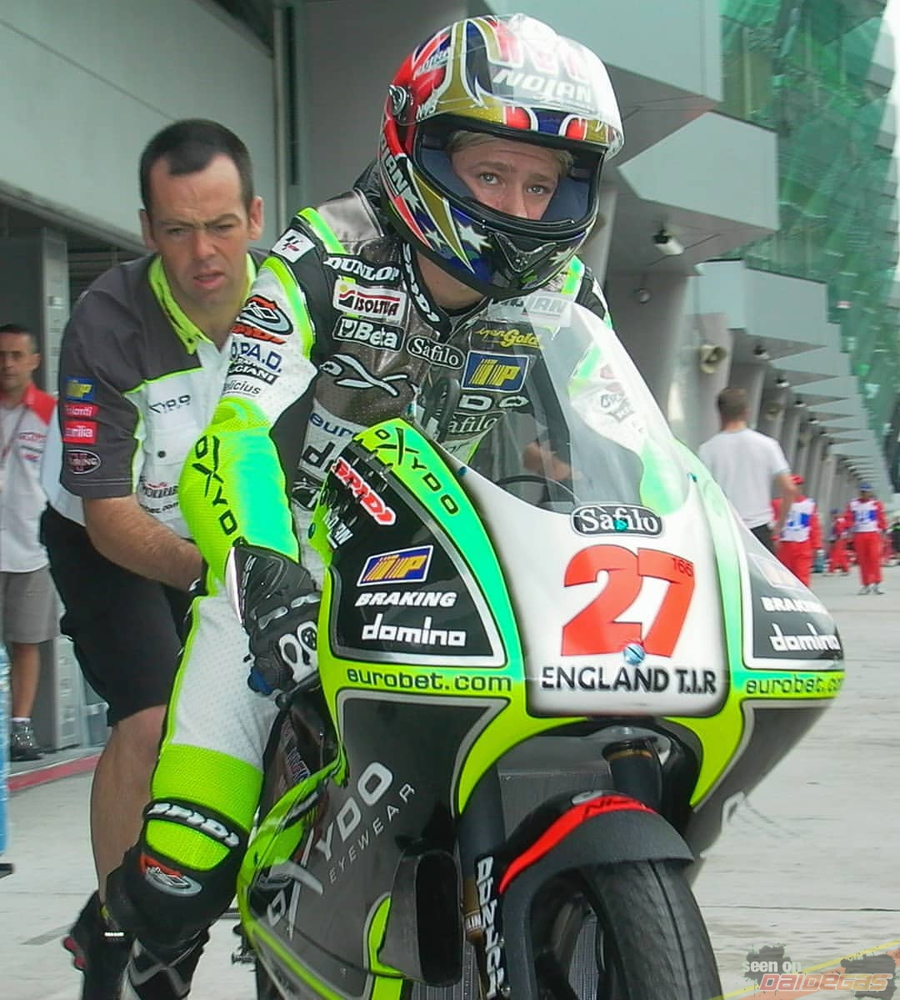
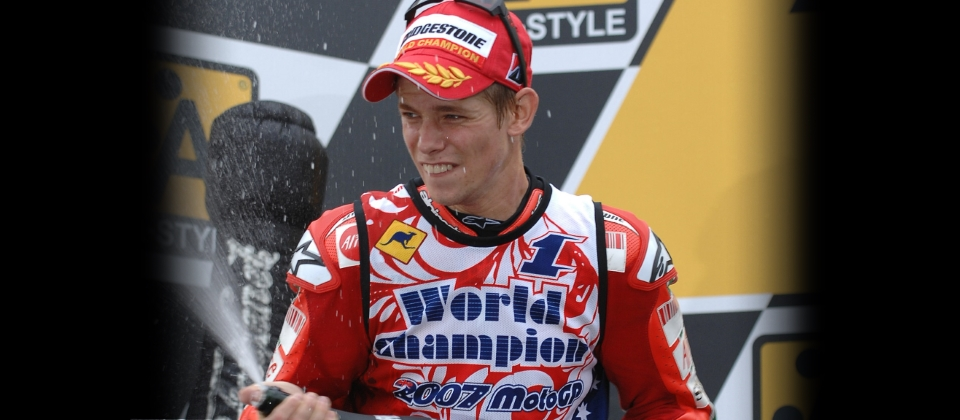

●Casey Joel Stoner AM (born 16 October 1985) is a retired Australian professional motorcycle racer, and a two-time MotoGP World Champion, in 2007 and 2011. Stoner served as a test and development rider for Ducati from 2016 to 2018.
●Born in Southport, Queensland, Stoner raced from a young age and moved to the United Kingdom to pursue a racing career. After first competing internationally in 2002, Stoner became MotoGP World Champion in 2007 for Ducati. One of Stoner's greatest talents was his ability to ride any motorcycle beyond its perceived limits, even producing race wins on the inferior Ducati chassis after both Honda and Yamaha had forged ahead in development during his later racing years.[2] Stoner won the MotoGP World Championship riding for Ducati and the win in 2007 remains as Ducati's only championship.[3] During 2008 and 2009 Stoner remained a strong contender, winning multiple races, but not being able to consistently challenge Valentino Rossi and Yamaha for the title during those seasons. In mid-season of 2009, he even missed a few races due to chronic fatigue due to anaemia, having started the season strongly. In 2010, Ducati failed to cope with Yamaha and Honda until very late in the season, when Stoner went out on a winning note winning three races.
●After his departure from Ducati to Honda following the 2010 season, Stoner won a second world championship title in 2011 for Repsol Honda. The championship was won in a dominant fashion with ten Grand Prix wins and sealed by winning his home race with two races remaining.
●On 27 March 2015, HRC announced that Casey Stoner would return to competition in a one-off ride in the 2015 Suzuka 8 Hours.
●He competed in his first race when he was four years old, in an under-nine years old race at the Mike Hatcher's dirt racing track on the Gold Coast of Australia. Between his very first race win at the age of six and the age of fourteen, Stoner won 41 dirt and long track titles and 70 state titles.
●In 2003 Stoner moved to the 125cc GP category. Here, working again with Cecchinello and Aprilia, he met with considerable success, scoring his first GP race win and three second places, finishing eighth overall at the season's end.
In 2004 Stoner joined the Red Bull KTM factory team in 125cc class and continued to improve, with another race win, two second places, three thirds, and a final championship position of fifth.
●In 2005 he rejoined the 250cc world championship class, racing once again for Lucio Cecchinello's team on a works Aprilia, Stoner emerged toward the season's end as a serious threat to championship leader Dani Pedrosa; a threat that only dissipated with a crash at Stoner's home Grand Prix of Phillip Island, allowing Pedrosa to establish an insurmountable points lead. Stoner went on to claim a solid second place in the overall championship standings, with an impressive five race victories for the season.
●In October 2005, Stoner, along with Lucio Cecchinello's team, reportedly had an agreement to move to the MotoGP class in the upcoming season with support from Yamaha.[9][10][11] After the season ended, he received an offer from the Honda Pons team and tested the Honda RC211V bike with them at Valencia.[12] However, in December 2005, Stoner re-signed with Cecchinello's team after Honda Pons failed to secure sponsorship for the upcoming season.[13] The team then made an agreement with LCR Honda to run the RC211V for Stoner in 2006.[14]
As a rookie satellite rider, Stoner took the pole position in just his second MotoGP race, but crashed several times during the season. He finished in 8th position in the championship, with his best result being a second place at the Turkish Grand Prix. He was leading the race until he was overtaken on the final corner by Marco Melandri.
●Stoner secured a ride with the Factory Ducati Team for the 2007 season,[15] joining Loris Capirossi on the new 800cc Ducati Desmosedici GP7. Stoner started off his Ducati career on a high note with a first premier-class win in the Qatar opener, after a tense battle with Valentino Rossi.[16] Stoner took ten race wins and six pole positions (including winning three of the first four[17]), took him to his first GP title, by a margin of 125 points (equivalent to five victories) over Dani Pedrosa, which he built during the second half of the season.[18] His worst finish was a 6th place at Motegi,[19] which was all he needed to clinch the title that day, taking the first premier class title for an Italian or a non-Japanese manufacturer since Phil Read's title for MV Agusta in 1974.[20] Stoner was named Young Australian of the Year for his 2007 performance.
●Stoner raced with the Repsol Honda Racing Team in 2011, with teammates Dani Pedrosa and Andrea Dovizioso. In preseason testing in Malaysia, Stoner was quickest in all three sessions,[46] closely followed by Pedrosa and reigning world champion Jorge Lorenzo. Stoner won the season-opening race in Qatar from pole position,[47] and had been quickest in each of the free practice sessions held before qualifying. Stoner took pole position for the Spanish Grand Prix, but had been running second behind Marco Simoncelli when he was taken out by the Ducati of Valentino Rossi in wet conditions.[48][49] Stoner won three out of the first five rounds of the season, with victories in Le Mans[50] and Catalunya to add to his Qatar victory. Stoner added victories at Silverstone in damp conditions,[51] and Laguna Seca,[52] to hold a 20-point lead over Jorge Lorenzo with eight races to go in the season.
●On 17 May 2012, during the pre-event press conference at the French Grand Prix, Stoner announced that he would retire from MotoGP at the end of the 2012 season.[4][5] Stoner stated that he no longer enjoyed competing in the series, which was one of the contributing factors to his retirement.[68] Getting away from the political stress of MotoGP, as well as having a desire to spend more time leisurely with his family were further reasons for his retirement. In a June 2014 interview, Stoner said he was enjoying his life away from the sport with his family and had no regrets about his retirement, further dismissing any chances of a comeback.
●Stoner showed signs of feeling under-appreciated by the general public. He was angered by consistent suggestions that the bike and tyres had a bigger role in his success than he did, and unhappy at being booed at Donington in 2007 and 2008.
In August 2008 he was criticised for his former Ducati team's association with tobacco company Philip Morris.
Stoner has stated that he would prefer to shun the limelight and let his riding style do the talking. In an interview with Australian Motorcycle News, he was quoted as saying he would prefer a return to purer form of racing from the 500cc days, stating that "Back in those days, it was just racing – Doohan, Rainey, Schwantz, Gardner, Lawson – not half as much bullshit as now. That was the life."
Before the 2012 Australian Grand Prix, the Phillip Island Grand Prix Circuit named the third corner "Stoner Corner".
Stoner met Adriana Tuchyna from Adelaide when she approached him at Phillip Island in 2003 and asked him to sign her stomach. A relationship began in 2005 when she turned 16, and they were married in Adelaide on 6 January 2007.
Following his experience of tiredness and sickness during 2009, Stoner was ultimately diagnosed as lactose intolerant.
At the Czech Republic Grand Prix in August 2011, Stoner announced that his wife was pregnant with their first child. The baby, named Alessandra Maria, was born on 16 February 2012, the same birthday as Stoner's long-time rival Valentino Rossi. On 6 October 2017, their second daughter Caleya Maria's birth was announced by Stoner on social media.
Stoner wore sponsored protective gear from Spidi between 2002 and 2005, and Alpinestars between 2006 and 2012. After announcing his retirement from MotoGP, Stoner still wore sponsored gear from Alpinestars, between his debut of the Australian V8 Supercars in 2013 and associated with the HRC with the tests of development new machinery for Honda RC213V.
Stoner's hobbies include fishing, go karts, and RC-cars.